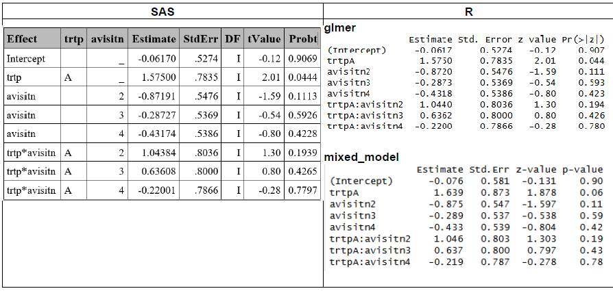
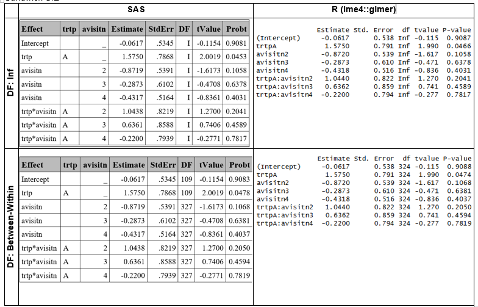
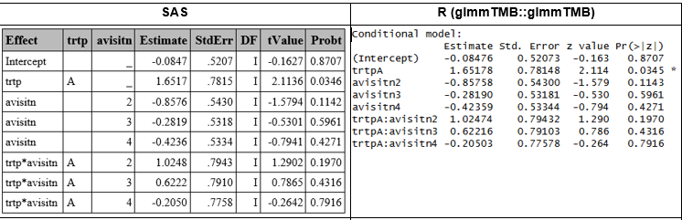
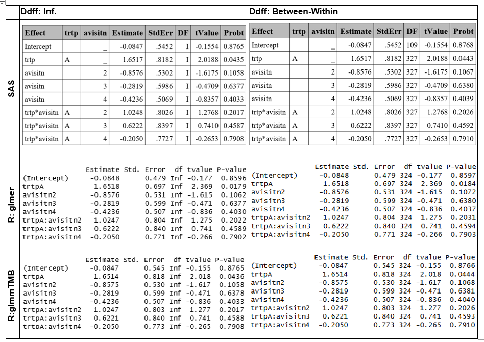
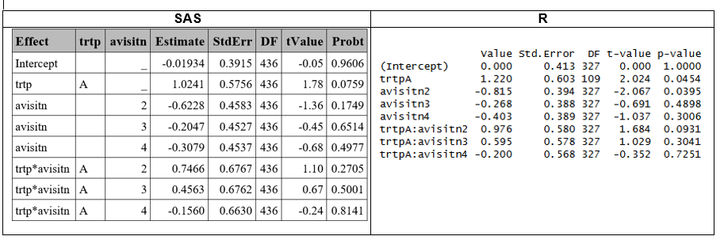
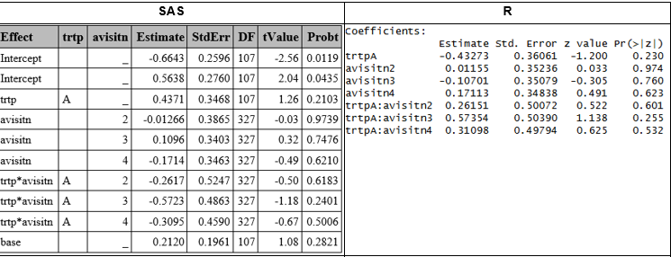
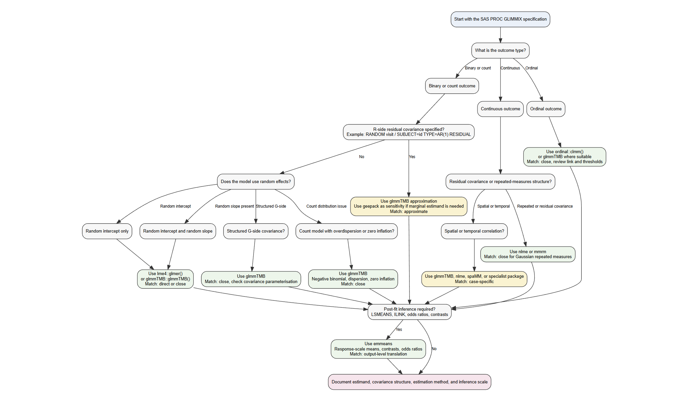

Generalized Linear Mixed Models (GLMM)
Summary
This page consists of the following parts:
This part explores different GLMM estimation methods (Gaussian–Hermite Quadrature (GHQ), Laplace approximation, or Penalized Quasi‑Likelihood (PQL)) for a binary data example.
This part provides a guide for translating common SAS
PROC GLIMMIXmodel specifications into R, with 10 examples.
1. Comparing Different GLMM Estimation Methods for Binary Data Example
Overview
Differences between SAS and R, (and even between different functions/procedures within same software) can lead to different results. These differences do not imply that one tool is more reliable than another but rather reflect variations in default settings and computational methods.
The following section summarizes the comparisons conducted using the dataset from “Gee Model for Binary Data” in the SAS/STAT Sample Program Library [1]. Each subsection corresponds to a different GLMM estimation method: Gaussian–Hermite Quadrature (GHQ), Laplace approximation, or Penalized Quasi‑Likelihood (PQL), and outlines the specific options and functions required to obtain consistent or comparable results across software platforms.
In general, different R functions were able to reproduce SAS GLMM results (using either GHQ or the Laplace approximation) when applying naïve or sandwich standard errors and assuming infinite degrees of freedom (ddff). However, only approximate agreement was achieved when comparing estimates based on the Between‑Within ddf. When using PQL, additional discrepancies emerged due to differences in the underlying estimation methods across software (i.e., PQL in R versus RSPL in SAS).
Gauss-Hermite Quadrature (GHQ) approximation
| S.E. | Ddff | SAS | R | Match? |
|---|---|---|---|---|
| Naive | Inf | GLIMMIX with ddff=none | lme4::glmer | Yes |
| Naive | Inf | GLIMMIX with ddff=none | GLMMadaptive::mixed_model | Aprox. |
| Naive | BW | GLIMMIX with ddff=BW (default) | lme4::glmer & parameters::dof_betwithin [1] | Aprox (1) |
| Sandwich | Inf | GLIMMIX with empirical option & ddff=none | lme4::glmer & merDeriv::sandwich | Aprox (2) |
| Sandwich | BW | GLIMMIX with empirical option & ddff=BW(default) | lme4::glmer, merDeriv::sandwich & parameters::dof_betwithin [1] | Aprox (1) |
BW: Between-Within, Inf: Infinite.
In R, the function
parameters::dof_betwithinuses a heuristic implementation of the between‑within method and therefore does not reproduce the exact results reported in Li and Redden (2015); instead, it yields values that are similar but not identical. In contrast, SAS computes the exact between‑within degrees of freedom.As
glmerdoes not provide cluster-level scores, thesandwichfunction cannot compute clustered robust estimatator, so it does not correspond to SAS’s emprical covariance [2].
Laplace approximation
| S.E. | Ddff | SAS | R | Match? |
|---|---|---|---|---|
| Naive | Inf | GLIMMIX with ddff=none | lme4::glmer | Aprox. (2) |
| Naive | Inf | GLIMMIX with ddff=none | glmmTMB::glmmTMB | Yes |
| Naive | BW | GLIMMIX with ddff=BW (default) | lglmmTMB::glmmTMB & parameters::dof_betwithin [1] | Aprox. (1) |
| Sandwich | Inf | GLIMMIX with empirical option & ddff=none | glmmTMB::glmmTMB & clubSandwich::vcovHC | Yes |
| Sandwich | BW | GLIMMIX with empirical option & ddff=BW(default) | lme4::glmer, merDeriv::sandwich & parameters::dof_betwithin [1] | Aprox (1) |
BW: Between-Within, Inf: Infinite.
(1): In R, the function parameters::dof_betwithin uses a heuristic implementation of the between‑within method and therefore does not reproduce the exact results reported in Li and Redden (2015); instead, it yields values that are similar but not identical. In contrast, SAS computes the exact between‑within degrees of freedom.
(2): Although lme4::glmer produced estimates consistent with SAS when using GHQ, it exhibited convergence issues that were not present in either SAS or glmmTMB::glmmTMB. After adjusting the optimization settings (see R section), only approximate agreement with the SAS results was achieved.
PQL
| S.E. | Ddff | SAS | R | Match? |
|---|---|---|---|---|
| Naive | Residual | GLIMMIX with method=RSPL & ddfm=residual | MASS::glmmPQL | Aprox. (1) |
(1): Results differ because of the different computation methods (PQL vs. RSPL)
GHQ Details
In this section, SAS and R results obtained under the GHQ approach are compared, after adjusting the necessary settings or applying additional functions to ensure alignment across software (See summary table above and respective R and SAS sections).
Model Based SE and Infinite ddff
Similar results in the estimate were obtained in SAS and R (using lme4::glmer), and approximated results were obtained with mixed_model (See R section for difference details between R functions).
Sandwich SE
Sandwich standard errors were computed using the EMPIRICAL option in SAS and the merDeriv::sandwich function in R (See corresponding SAS and R sections for details). This approach yielded comparable,though not identical results. The slight discrepancies arise because the base sandwich method cannot compute a fully cluster‑robust estimator for glmer models, and therefore does not reproduce the exact empirical covariance structure used by SAS [2].
Between-Within ddff were obtained in R using parameters::dof_betwithin function, which computes an approximation, instead of the exact dff as in SAS.

Laplace Details
Model Based SE and Infinite ddff
Results obtained with SAS and glmmTMB::glmmTMB matched, with minor differences in the latest decimal, attributable to different rounding between software.

Sandwich SE
Sandwich SE were obtained using clubSandwich::vovHC R function, obtainng similar SE to SAS. However, there are differences in the between-within ddff, because the R function is based on a heuristic.

PQL Details
The PQL approach uses linear approximations instead of likelihood, making it less accurate for binary outcomes compared to the GHQ or Laplace methods described above. In SAS, this is implemented by default using the Residual Pseudo-Likelihood method (method=RSPL), which is a refinement of PQL which incorporates residual adjustments to better approximate the marginal likelihood, in the GLIMMIX procedure. In R the PQL computation can be obtained using the glmmPQL function form the MASS package.

Results differ because of the different computation methods (PQL vs. RSPL) across software. Since glmmPQL is widely recognized as less reliable for binary outcomes, more robust approaches such as Laplace or GHQ are generally preferred. Consequently, further investigation using glmmPQL is not pursued.
Outcomes with more than 2 Categories
Ordinal variables
A GLMM with ordinal outcome is fit in SAS using PROC CLIMMIX and function ordinal::clmm, (See corresponding SAS and R section for details), obtaining some differences in the results, because clmm applies different optimization algorithms (Newton, BFGS, NR methods) and its own parameterization of random effects [2].

Nominal variables
GLMM with nominal outcome is created with GLIMMIX (See corresponding SAS section), However, no R functions equivalent to SAS’s GLIMMIX procedure have been identified for handling multinomial distributions in a frequentist framwork.
2. SAS GLIMMIX to R
Background
PROC GLIMMIX is used in clinical research for generalised linear mixed models, repeated-measures models, non-Gaussian outcomes, random effects, and covariance structures. It supports binary, count, ordinal, and continuous outcomes within one modelling framework.
When moving analyses from SAS to R, the main issue is not just whether the same statistical method exists in R. The main issue is whether the same PROC GLIMMIX specification can be translated into an R model with the same outcome distribution, link function, random-effects structure, covariance structure, estimation target, and post-fit inference.
Some PROC GLIMMIX models have direct R counterparts. Others require approximation because R packages may not support the same residual covariance structure, likelihood approximation, denominator degrees of freedom method, or LSMEANS / ILINK workflow.
Purpose of the Article
This article provides a structured guide for translating common SAS PROC GLIMMIX model specifications into R.
The aim is to identify the most suitable R package for each PROC GLIMMIX scenario, assess whether the translation is direct or approximate, and document where differences in estimates, standard errors, covariance parameters, or post-fit summaries should be expected.
Scope: Translating PROC GLIMMIX Models to R
This article focuses on PROC GLIMMIX scenarios where the SAS model includes one or more of the following features:
- non-Gaussian outcomes
- random intercepts or random slopes
- G-side covariance structures
- R-side residual covariance structures
- repeated-measures structures
- overdispersion or zero inflation
- ordinal response models
- spatial or temporal correlation structures
LSMEANS,ILINK, odds ratios, and post-fit contrasts
The article does not treat R packages as interchangeable replacements for SAS. Instead, each R implementation is selected according to the PROC GLIMMIX model structure, the estimand, and the output required for interpretation.
Comparisons of Languages
| PROC GLIMMIX Scenario | Supported in R | Closest R Package | Results Match | Notes |
|---|---|---|---|---|
| Binary GLMM with random intercept | Yes | lme4, glmmTMB |
Close | Direct GLMM implementation available in both environments |
| Binary GLMM with random intercept and slope | Yes | lme4, glmmTMB |
Close | Optimisation and covariance parameterisation may differ |
| Count GLMM with random effects | Yes | glmmTMB, lme4 |
Close | Poisson and negative binomial mixed models are supported |
| Overdispersed count GLMM | Yes | glmmTMB |
Close | Preferred R route for flexible count dispersion |
| Ordinal GLMM | Yes | ordinal, glmmTMB |
Close | Package choice depends on link function and random-effects needs |
| GLIMMIX with structured G-side covariance | Partial | glmmTMB, nlme |
Approximate to expected | Match depends on outcome type and covariance form |
| GLIMMIX with R-side covariance for binary or count outcomes | Partial | glmmTMB, geepack |
Approximate | Direct residual covariance support is limited for non-Gaussian GLMMs |
| GLIMMIX with continuous repeated outcomes | Yes | nlme, mmrm |
Close | Strong R support for Gaussian repeated-measures covariance |
| GLIMMIX post-fit marginal means and contrasts | Yes | emmeans |
Close | Used for LS-means, response-scale estimates, contrasts, and odds ratios |
| GLIMMIX used for population-level summaries | Partial | emmeans, geepack |
Approximate | emmeans summarises GLMM predictions; geepack targets a marginal estimand |
Libraries or Extensions Needed
library(lme4)
library(glmmTMB)
library(nlme)
library(mmrm)
library(geepack)
library(emmeans)
library(ordinal)The packages above cover the main R translation routes used in this article. lme4 is used for standard GLMMs, glmmTMB for flexible non-Gaussian mixed models, nlme and mmrm for continuous repeated-measures models, geepack for marginal sensitivity analyses, emmeans for post-fit inference, and ordinal for cumulative link mixed models.
Data Sources for the Analysis
Simulated Data Generation
Synthetic datasets for all scenarios are stored in the GitHub repository:
https://github.com/Franosei/Camis-data-simulation/tree/main/scenario_data
Each scenario folder contains:
generate_data.R: reproducible R data-generation code.generate_data.sas: SAS code to import the R-generated CSV or create a SAS-native replicate.*.csv: generated synthetic data for R or SAS analysis.
The commands below are provided for reproducibility. They are not evaluated when this article is rendered because the scenario-generation scripts are stored in the external simulation repository rather than in the CAMIS article directory.
Run all R generators from the repository root:
Rscript scenario_data/generate_all_scenarios.RRun one R scenario:
Rscript scenario_data/scenario_01_random_intercept/generate_data.RRun all SAS scenario programmes from the repository root:
%include "scenario_data/generate_all_scenarios.sas";By default, the SAS programmes import the R-generated CSV files. This gives row-level consistency across R and SAS analyses.
To simulate a SAS-native replicate for one scenario:
%let scenario_dir=scenario_data/scenario_01_random_intercept;
%let mode=SIMULATE_IN_SAS;
%include "scenario_data/scenario_01_random_intercept/generate_data.sas";SAS-native simulation uses the same design, seeds, distributions, coefficients, column names, and row counts as the R scripts. Row values may differ because R and SAS use different random-number engines.
Data Preparation Checks Before Model Fitting
Before fitting each model, the analysis data should be prepared consistently in R and SAS. This step is essential because small differences in filtering, factor coding, visit ordering, or derived variables can lead to apparent software differences that are not caused by the modelling procedure itself.
For each scenario, the following checks should be completed before comparing model outputs:
Apply the same analysis filters in both languages, including
PARAMCD, population flags, analysis flags, and baseline exclusions.Confirm that the same response variable, treatment variable, subject or site identifier, visit variable, and covariates are used.
Align categorical reference levels for treatment, sex, race, visit, and any other class variables.
Confirm that binary outcomes use the same event definition in SAS and R.
Confirm that ordinal outcomes use the same category ordering before comparing cumulative-logit estimates.
Create derived variables consistently, including centred or scaled covariates, visit factors, and log-offset terms.
Sort repeated-measures data by subject or site and visit before fitting models with correlation or covariance structures.
Verify that the number of observations, number of subjects or sites, and maximum records per cluster match across R and SAS.
These checks help ensure that any remaining differences are attributable to software implementation, estimation method, covariance parameterisation, or post-fit inference rather than inconsistencies in the analysis dataset.
Statistical Method
Decision Framework
The decision framework starts from the SAS PROC GLIMMIX specification and identifies the closest R implementation. The selection is based on outcome type, random-effects structure, covariance structure, distribution, and post-fit inference needs.
How to Read a PROC GLIMMIX Specification
Read the SAS model in this order:
- Identify the response distribution and link function from the
MODELstatement. - Identify the clustering variable from
SUBJECT=. - Check whether the model uses random intercepts, random slopes, or structured G-side covariance.
- Check whether the
RESIDUALoption is used, since this indicates R-side covariance. - Check whether the analysis requires
LSMEANS,ILINK, odds ratios, or contrasts. - Select the R package based on the model feature being translated.
Decision Tree for Selecting the R Implementation

Decision Mapping
| PROC GLIMMIX Feature | Outcome Type | SAS Specification Pattern | Closest R Implementation | Match Level | Review Level |
|---|---|---|---|---|---|
| Random intercept only | Binary or count | random intercept / subject=id |
lme4::glmer() or glmmTMB::glmmTMB() |
Direct | Standard |
| Random intercept and random slope | Binary or count | random intercept time / subject=id type=un |
lme4::glmer() or glmmTMB::glmmTMB() |
Direct or close | Standard |
| Structured G-side covariance | Binary, count, or continuous | random ... / subject=id type=un or other G-side structure |
glmmTMB, nlme |
Close or approximate | Statistical |
| R-side covariance | Binary or count | random visit / subject=id type=ar(1) residual |
glmmTMB approximation; geepack sensitivity |
Approximate | SME |
| R-side covariance | Continuous | random visit / subject=id type=ar(1) residual |
nlme::lme() or mmrm |
Close | Standard |
| Count GLMM | Count | dist=poisson or dist=negbin |
glmmTMB or lme4 |
Direct or close | Standard |
| Overdispersed count GLMM | Count | Poisson model with overdispersion or scale adjustment | glmmTMB |
Close | Statistical |
| Ordinal GLMM | Ordinal | Cumulative or multinomial ordinal response model | ordinal::clmm() or glmmTMB |
Close | SME |
| Spatial or temporal correlation | Any | Spatial, temporal, or irregular correlation structure | glmmTMB, nlme, spaMM, or specialist package |
Case-specific | SME |
| Post-fit marginal means | Any | lsmeans ... / ilink |
emmeans::emmeans(..., type = "response") |
Output-level match | Output review |
| Contrasts and odds ratios | Binary or ordinal | lsmeans ... / diff oddsratio or estimate ... / exp |
emmeans::contrast() and emmeans::pairs() |
Output-level match | Output review |
| Population-level summaries from GLIMMIX | Binary or count | GLIMMIX model with response-scale marginal summaries | emmeans; geepack as estimand sensitivity |
Approximate | SME |
Equivalence Criteria for Comparing R and SAS Outputs
The comparison between R and SAS should be interpreted using a hierarchy of equivalence criteria. Exact numerical agreement is not always expected, especially when the software uses different likelihood approximations, covariance parameterisations, denominator degrees of freedom, or post-fit calculation methods.
For each scenario, equivalence is assessed using the following criteria:
Model specification: the same response variable, covariates, treatment groups, reference levels, distribution, link function, clustering variable, and random-effects or covariance structure are used where supported.
Analysis population: the same records are included after applying population flags, analysis flags, parameter filters, visit restrictions, and baseline exclusions.
Fixed-effect estimates: treatment effects and key covariate effects have the same direction, similar magnitude, and comparable standard errors.
Covariance parameters: random-effect variances, standard deviations, correlations, and residual variance estimates are comparable when the same structure is available in both languages.
Post-fit estimands: LS-means, response-scale estimates, odds ratios, rate ratios, treatment differences, and contrasts are compared on the same interpretation scale.
Clinical or statistical conclusion: the overall interpretation remains consistent, even where fit statistics, p-values, or confidence intervals differ slightly.
AIC, BIC, denominator degrees of freedom, and p-values are treated as secondary comparison criteria unless they are central to the analysis objective. Differences in these quantities should be interpreted in the context of the estimation method and software-specific implementation.
Scenario 1: Binary GLMM with Random Intercept
Objective
This scenario translates a SAS PROC GLIMMIX binary random-intercept model into R. The outcome is 30-day readmission, coded as AVAL, with site-level clustering through SITEID.
The model estimates the effect of treatment arm, age, sex, race, comorbidity index, and prior admissions on the odds of readmission. The SAS model uses PROC GLIMMIX with a random intercept for site. The R implementation uses lme4::glmer() with the same binary logit model and random-intercept structure.
R
library(lme4)
scenario_01 <- read.csv(
"https://raw.githubusercontent.com/Franosei/Camis-data-simulation/main/scenario_data/scenario_01_random_intercept/scenario_01_random_intercept.csv"
)
scenario_01 <- subset(
scenario_01,
PARAMCD == "READM30D" &
ITTFL == "Y" &
SAFFL == "Y" &
ANL01FL == "Y"
)
scenario_01$SITEID <- factor(scenario_01$SITEID)
scenario_01$ARMCD <- relevel(
factor(scenario_01$ARMCD),
ref = "STDCARE"
)
scenario_01$SEX <- factor(scenario_01$SEX)
scenario_01$RACE <- factor(scenario_01$RACE)
fit_r <- glmer(
AVAL ~
ARMCD +
AGE +
SEX +
RACE +
COMORBIDX +
PRIORADM +
(1 | SITEID),
data = scenario_01,
family = binomial(link = "logit"),
control = glmerControl(optimizer = "bobyqa")
)
summary(fit_r)
exp(fixef(fit_r))SAS
filename scenario temp;
proc http
url="https://raw.githubusercontent.com/Franosei/Camis-data-simulation/main/scenario_data/scenario_01_random_intercept/scenario_01_random_intercept.csv"
method="GET"
out=scenario;
run;
proc import datafile=scenario
out=scenario_01
dbms=csv
replace;
guessingrows=max;
run;
proc glimmix data=scenario_01 method=laplace;
where PARAMCD = "READM30D"
and ITTFL = "Y"
and SAFFL = "Y"
and ANL01FL = "Y";
class SITEID ARMCD(ref="STDCARE") SEX RACE;
model AVAL(event="1") =
ARMCD
AGE
SEX
RACE
COMORBIDX
PRIORADM
/ dist=binary
link=logit
solution
oddsratio;
random intercept / subject=SITEID;
run;Results Comparison
| Quantity | R lme4::glmer() |
SAS PROC GLIMMIX |
|---|---|---|
| Number of observations | 624 | 624 |
| Number of sites | 24 | 24 |
| Maximum observations per site | 34 | 34 |
| -2 Log Likelihood | 747.20 | 747.18 |
| AIC | 767.20 | 767.18 |
| BIC | 811.50 | 778.96 |
| Random-intercept variance | 0.5462 | 0.5463 |
| Random-intercept standard deviation | 0.7391 | 0.7391 |
| Effect | R Estimate | R Standard Error | R p-value | SAS Estimate | SAS Standard Error | SAS p-value |
|---|---|---|---|---|---|---|
| Intercept | -3.1353 | 0.6392 | <0.0001 | -2.4179 | 0.5865 | 0.0004 |
| Treatment: care management vs standard care | -0.2968 | 0.1897 | 0.1177 | -0.2968 | 0.1902 | 0.1191 |
| Age | 0.0261 | 0.0081 | 0.0014 | 0.0261 | 0.0082 | 0.0015 |
| Sex: male vs female | 0.2542 | 0.1856 | 0.1708 | 0.2542 | 0.1860 | 0.1723 |
| Race: Black or African American vs Asian | 0.1248 | 0.3498 | 0.7212 | 0.1248 | 0.3499 | 0.7212 |
| Race: Other vs Asian | 0.4404 | 0.4316 | 0.3076 | 0.4403 | 0.4317 | 0.3079 |
| Race: White vs Asian | 0.4636 | 0.3038 | 0.1270 | 0.4636 | 0.3045 | 0.1284 |
| Comorbidity index | 0.2853 | 0.0811 | 0.0004 | 0.2854 | 0.0812 | 0.0005 |
| Prior admissions | 0.2632 | 0.1281 | 0.0399 | 0.2632 | 0.1283 | 0.0406 |
| Effect | R Odds Ratio | R 95% CI | SAS Odds Ratio | SAS 95% CI |
|---|---|---|---|---|
| Treatment: care management vs standard care | 0.743 | 0.512, 1.078 | 0.743 | 0.512, 1.080 |
| Age | 1.026 | 1.010, 1.043 | 1.026 | 1.010, 1.043 |
| Sex: male vs female | 1.289 | 0.896, 1.855 | 1.289 | 0.894, 1.858 |
| Race: Black or African American vs Asian | 1.133 | 0.571, 2.249 | 1.133 | 0.570, 2.252 |
| Race: Other vs Asian | 1.553 | 0.667, 3.619 | 1.553 | 0.666, 3.622 |
| Race: White vs Asian | 1.590 | 0.876, 2.884 | 1.590 | 0.876, 2.884 |
| Comorbidity index | 1.330 | 1.135, 1.559 | 1.330 | 1.134, 1.560 |
| Prior admissions | 1.301 | 1.012, 1.672 | 1.301 | 1.011, 1.674 |
Scenario 2: Binary GLMM with Random Intercept and Slope
Objective
This scenario translates a SAS PROC GLIMMIX binary random-intercept and random-slope model into R. The outcome is asthma control, coded as AVAL, with repeated observations clustered within USUBJID.
The model estimates the effect of treatment arm, scaled time, scaled age, sex, race, baseline severity, and scaled adherence on the odds of asthma control. The SAS model uses PROC GLIMMIX with independent subject-level random intercept and random slope terms. The R implementation uses lme4::glmer() with the matching || random-effects structure.
R
library(lme4)
scenario_02 <- read.csv(
"https://raw.githubusercontent.com/Franosei/Camis-data-simulation/main/scenario_data/scenario_02_random_intercept_slope/scenario_02_random_intercept_slope.csv"
)
scenario_02 <- subset(
scenario_02,
PARAMCD == "ASTCTRL" &
ITTFL == "Y" &
SAFFL == "Y" &
ANL01FL == "Y"
)
scenario_02$USUBJID <- factor(scenario_02$USUBJID)
scenario_02$ARMCD <- relevel(
factor(scenario_02$ARMCD),
ref = "CTRLTHX"
)
scenario_02$SEX <- factor(scenario_02$SEX)
scenario_02$RACE <- factor(scenario_02$RACE)
scenario_02$TIMEYEAR_C <- as.numeric(
scale(scenario_02$TIMEYEAR, center = TRUE, scale = TRUE)
)
scenario_02$AGE_C <- as.numeric(
scale(scenario_02$AGE, center = TRUE, scale = TRUE)
)
scenario_02$ADHERE_C <- as.numeric(
scale(scenario_02$ADHERE, center = TRUE, scale = TRUE)
)
fit_r <- glmer(
AVAL ~
ARMCD +
TIMEYEAR_C +
AGE_C +
SEX +
RACE +
BSEVRITY +
ADHERE_C +
(1 + TIMEYEAR_C || USUBJID),
data = scenario_02,
family = binomial(link = "logit"),
control = glmerControl(
optimizer = "bobyqa",
optCtrl = list(maxfun = 100000)
)
)
summary(fit_r)
or_ci_r <- exp(
cbind(
Odds_Ratio = fixef(fit_r),
confint(fit_r, parm = names(fixef(fit_r)), method = "Wald")
)
)
or_ci_rSAS
```{sas}
{filename scenario temp;}
proc http
url="https://raw.githubusercontent.com/Franosei/Camis-data-simulation/main/scenario_data/scenario_02_random_intercept_slope/scenario_02_random_intercept_slope.csv"
method="GET"
out=scenario;
run;
proc import datafile=scenario
out=scenario_02
dbms=csv
replace;
guessingrows=max;
run;
proc means data=scenario_02 noprint;
where PARAMCD = "ASTCTRL"
and ITTFL = "Y"
and SAFFL = "Y"
and ANL01FL = "Y";
var TIMEYEAR AGE ADHERE;
output out=scales
mean=mean_TIMEYEAR mean_AGE mean_ADHERE
std=sd_TIMEYEAR sd_AGE sd_ADHERE;
run;
data scenario_02_scaled;
if _n_ = 1 then set scales;
set scenario_02;
where PARAMCD = "ASTCTRL"
and ITTFL = "Y"
and SAFFL = "Y"
and ANL01FL = "Y";
TIMEYEAR_C = (TIMEYEAR - mean_TIMEYEAR) / sd_TIMEYEAR;
AGE_C = (AGE - mean_AGE) / sd_AGE;
ADHERE_C = (ADHERE - mean_ADHERE) / sd_ADHERE;
run;
proc glimmix data=scenario_02_scaled method=laplace;
class USUBJID ARMCD(ref="CTRLTHX") SEX RACE;
model AVAL(event="1") =
ARMCD
TIMEYEAR_C
AGE_C
SEX
RACE
BSEVRITY
ADHERE_C
/ dist=binary
link=logit
solution
oddsratio;
random intercept TIMEYEAR_C / subject=USUBJID type=vc;
run;
```Results Comparison
| Quantity | R lme4::glmer() |
SAS PROC GLIMMIX |
|---|---|---|
| Number of observations | 1400 | 1400 |
| Number of subjects | 280 | 280 |
| Maximum observations per subject | 5 | 5 |
| -2 Log Likelihood | 1670.30 | 1670.25 |
| AIC | 1694.30 | 1694.25 |
| BIC | 1757.20 | 1737.87 |
| Random-intercept variance | 0.6950 | 0.6949 |
Random-slope variance for TIMEYEAR_C |
0.0113 | 0.0113 |
| Random-intercept standard deviation | 0.8337 | 0.8336 |
Random-slope standard deviation for TIMEYEAR_C |
0.1060 | 0.1062 |
| Effect | R Estimate | R Standard Error | R p-value | SAS Estimate | SAS Standard Error | SAS p-value |
|---|---|---|---|---|---|---|
| Treatment: standard care vs control therapy | -1.1041 | 0.1888 | <0.0001 | -1.1042 | 0.1888 | <0.0001 |
| Scaled time | 0.5591 | 0.0671 | <0.0001 | 0.5591 | 0.0671 | <0.0001 |
| Scaled age | 0.1601 | 0.0809 | 0.0477 | 0.1601 | 0.0809 | 0.0480 |
| Baseline severity | -0.2875 | 0.1051 | 0.0062 | -0.2875 | 0.1051 | 0.0063 |
| Scaled adherence | 0.0803 | 0.0687 | 0.2421 | 0.0804 | 0.0687 | 0.2422 |
| Effect | R Odds Ratio | R 95% CI | SAS Odds Ratio | SAS 95% CI |
|---|---|---|---|---|
| Treatment: standard care vs control therapy | 0.331 | 0.229, 0.480 | 0.331 | 0.229, 0.480 |
| Scaled time | 1.749 | 1.533, 1.995 | 1.749 | 1.533, 1.996 |
| Scaled age | 1.174 | 1.002, 1.375 | 1.174 | 1.001, 1.376 |
| Baseline severity | 0.750 | 0.611, 0.922 | 0.750 | 0.610, 0.922 |
| Scaled adherence | 1.084 | 0.947, 1.240 | 1.084 | 0.947, 1.240 |
Scenario 3: Continuous Repeated-Measures GLIMMIX Model
Objective
This scenario translates a SAS PROC GLIMMIX Gaussian repeated-measures model into R. The outcome is systolic blood pressure, coded as AVAL, with repeated visits clustered within USUBJID.
The SAS model uses a Gaussian identity-link model with AR(1) R-side covariance. The R implementation uses nlme::gls() with the same fixed-effect structure and AR(1) correlation. Post-fit visit-specific treatment means and treatment differences are estimated using emmeans.
R
library(nlme)
library(emmeans)
scenario_03 <- read.csv(
"https://raw.githubusercontent.com/Franosei/Camis-data-simulation/main/scenario_data/scenario_03_continuous_repeated_measures/scenario_03_continuous_repeated_measures.csv"
)
scenario_03 <- subset(
scenario_03,
PARAMCD == "SYSBP" &
ITTFL == "Y" &
SAFFL == "Y" &
ANL01FL == "Y"
)
scenario_03$USUBJID <- factor(scenario_03$USUBJID)
scenario_03$ARMCD <- relevel(
factor(scenario_03$ARMCD),
ref = "STDTHER"
)
scenario_03$SEX <- relevel(
factor(scenario_03$SEX),
ref = "F"
)
scenario_03$RACE <- relevel(
factor(scenario_03$RACE),
ref = "WHITE"
)
scenario_03$AVISITN_F <- relevel(
factor(scenario_03$AVISITN),
ref = "1"
)
scenario_03 <- scenario_03[order(
scenario_03$USUBJID,
scenario_03$AVISITN
), ]
fit_r <- nlme::gls(
AVAL ~
ARMCD *
AVISITN_F +
BPBASE +
AGE +
SEX +
RACE,
data = scenario_03,
method = "REML",
correlation = nlme::corAR1(
form = ~ AVISITN | USUBJID
)
)
summary(fit_r)
anova(fit_r)
emm_r <- emmeans::emmeans(
fit_r,
~ ARMCD | AVISITN_F
)
emm_r
pairs(
emm_r,
reverse = TRUE,
adjust = "none"
)SAS
filename scenario temp;
proc http
url="https://raw.githubusercontent.com/Franosei/Camis-data-simulation/main/scenario_data/scenario_03_continuous_repeated_measures/scenario_03_continuous_repeated_measures.csv"
method="GET"
out=scenario;
run;
proc import datafile=scenario
out=scenario_03_raw
dbms=csv
replace;
guessingrows=max;
run;
data scenario_03;
set scenario_03_raw;
where PARAMCD = "SYSBP"
and ITTFL = "Y"
and SAFFL = "Y"
and ANL01FL = "Y";
AVISITN_F = strip(put(AVISITN, best.));
run;
proc sort data=scenario_03;
by USUBJID AVISITN;
run;
proc glimmix data=scenario_03 method=rspl;
class
USUBJID
ARMCD(ref="STDTHER")
AVISITN_F(ref="1")
SEX(ref="F")
RACE(ref="WHITE");
model AVAL =
ARMCD
AVISITN_F
ARMCD*AVISITN_F
BPBASE
AGE
SEX
RACE
/ dist=normal
link=identity
solution
ddfm=kr;
random _residual_ /
subject=USUBJID
type=ar(1);
lsmeans ARMCD*AVISITN_F /
diff
cl;
run;Results Comparison
| Quantity | R nlme::gls() |
SAS PROC GLIMMIX |
|---|---|---|
| Number of observations | 1100 | 1100 |
| Number of subjects | 220 | 220 |
| Maximum observations per subject | 5 | 5 |
| Correlation structure | AR(1) | AR(1) R-side |
| AR(1) correlation | 0.8333 | 0.8333 |
| Residual variance | 89.23 | 89.23 |
| Residual standard error | 9.4459 | 9.4459 |
| -2 Restricted Log Likelihood | 6993.53 | 6993.53 |
| AIC | 7029.53 | 6997.53 |
| BIC | 7119.32 | 7004.32 |
| Effect | R Estimate | R Standard Error | R p-value | SAS Estimate | SAS Standard Error | SAS p-value |
|---|---|---|---|---|---|---|
| Intercept | 72.7999 | 8.1235 | <0.0001 | 72.7999 | 8.1162 | <0.0001 |
| Treatment: medication intensification vs standard therapy | -2.7768 | 1.2935 | 0.0320 | -2.7768 | 1.2934 | 0.0325 |
| Visit 2 vs visit 1 | -1.6078 | 0.5087 | 0.0016 | -1.6078 | 0.5100 | 0.0017 |
| Visit 3 vs visit 1 | -2.7217 | 0.6887 | 0.0001 | -2.7217 | 0.6905 | <0.0001 |
| Visit 4 vs visit 1 | -3.0974 | 0.8087 | 0.0001 | -3.0974 | 0.8109 | 0.0001 |
| Visit 5 vs visit 1 | -4.0296 | 0.8965 | <0.0001 | -4.0296 | 0.8989 | <0.0001 |
| Baseline systolic blood pressure | 0.4527 | 0.0473 | <0.0001 | 0.4527 | 0.0473 | <0.0001 |
| Age | 0.0784 | 0.0577 | 0.1747 | 0.0784 | 0.0577 | 0.1754 |
| Sex: male vs female | 1.1063 | 1.1167 | 0.3221 | 1.1063 | 1.1157 | 0.3225 |
| Race: Asian vs White | -1.9717 | 1.7489 | 0.2598 | -1.9717 | 1.7473 | 0.2604 |
| Race: Black or African American vs White | 1.7630 | 1.4532 | 0.2253 | 1.7630 | 1.4519 | 0.2259 |
| Race: Other vs White | 0.7157 | 2.0951 | 0.7327 | 0.7157 | 2.0932 | 0.7327 |
| Treatment × Visit 2 | -0.1046 | 0.7363 | 0.8871 | -0.1046 | 0.7382 | 0.8874 |
| Treatment × Visit 3 | 0.1189 | 0.9969 | 0.9051 | 0.1189 | 0.9995 | 0.9054 |
| Treatment × Visit 4 | -0.7445 | 1.1706 | 0.5249 | -0.7445 | 1.1737 | 0.5260 |
| Treatment × Visit 5 | -2.2704 | 1.2977 | 0.0805 | -2.2704 | 1.3011 | 0.0813 |
| Visit | R STDTHER Mean | R MEDINT Mean | R Difference | SAS STDTHER Mean | SAS MEDINT Mean | SAS Difference |
|---|---|---|---|---|---|---|
| 1 | 146.20 | 143.43 | -2.78 | 146.20 | 143.43 | -2.78 |
| 2 | 144.59 | 141.71 | -2.88 | 144.59 | 141.71 | -2.88 |
| 3 | 143.48 | 140.82 | -2.66 | 143.48 | 140.82 | -2.66 |
| 4 | 143.11 | 139.58 | -3.52 | 143.11 | 139.58 | -3.52 |
| 5 | 142.17 | 137.13 | -5.05 | 142.17 | 137.13 | -5.05 |
Scenario 4: GLIMMIX with Structured G-side Covariance
Objective
This scenario translates a SAS PROC GLIMMIX Gaussian mixed model with structured G-side covariance into R. The outcome is functional score, coded as AVAL, with repeated observations clustered within USUBJID.
The SAS model uses a random intercept and random slope for WKSCALED with an unstructured G-side covariance matrix. The R implementation uses glmmTMB with the same fixed-effect structure and correlated subject-level random effects.
R
library(glmmTMB)
library(emmeans)
scenario_04 <- read.csv(
"https://raw.githubusercontent.com/Franosei/Camis-data-simulation/main/scenario_data/scenario_04_structured_g_side_covariance/scenario_04_structured_g_side_covariance.csv",
stringsAsFactors = FALSE
)
scenario_04 <- subset(
scenario_04,
PARAMCD == "FNCSCORE" &
ITTFL == "Y" &
SAFFL == "Y" &
ANL01FL == "Y"
)
scenario_04$USUBJID <- factor(scenario_04$USUBJID)
scenario_04$ARMCD <- relevel(
factor(scenario_04$ARMCD),
ref = "STDREHAB"
)
scenario_04$SEX <- relevel(
factor(scenario_04$SEX),
ref = "F"
)
scenario_04$RACE <- relevel(
factor(scenario_04$RACE),
ref = "WHITE"
)
scenario_04 <- scenario_04[order(
scenario_04$USUBJID,
scenario_04$WKSCALED
), ]
fit_r <- glmmTMB::glmmTMB(
AVAL ~
ARMCD *
WKSCALED +
BSCORE +
AGE +
SEX +
RACE +
SESNMINC +
(1 + WKSCALED | USUBJID),
data = scenario_04,
family = gaussian(link = "identity"),
REML = TRUE
)
summary(fit_r)
emmeans_r <- emmeans::emmeans(
fit_r,
~ ARMCD | WKSCALED,
at = list(
WKSCALED = c(0, 0.5, 1, 2, 3)
)
)
emmeans_r
pairs(
emmeans_r,
reverse = TRUE,
adjust = "none"
)SAS
filename scenario temp;
proc http
url="https://raw.githubusercontent.com/Franosei/Camis-data-simulation/main/scenario_data/scenario_04_structured_g_side_covariance/scenario_04_structured_g_side_covariance.csv"
method="GET"
out=scenario;
run;
proc import datafile=scenario
out=scenario_04_raw
dbms=csv
replace;
guessingrows=max;
run;
data scenario_04;
set scenario_04_raw;
where PARAMCD = "FNCSCORE"
and ITTFL = "Y"
and SAFFL = "Y"
and ANL01FL = "Y";
run;
proc sort data=scenario_04;
by USUBJID WKSCALED;
run;
proc glimmix data=scenario_04 method=rspl;
class
USUBJID
ARMCD(ref="STDREHAB")
SEX(ref="F")
RACE(ref="WHITE");
model AVAL =
ARMCD
WKSCALED
ARMCD*WKSCALED
BSCORE
AGE
SEX
RACE
SESNMINC
/ dist=normal
link=identity
solution
ddfm=kr;
random intercept WKSCALED /
subject=USUBJID
type=un;
lsmeans ARMCD /
at WKSCALED = 0 0.5 1 2 3
diff
cl;
run;Results Comparison
| Quantity | R glmmTMB |
SAS PROC GLIMMIX |
|---|---|---|
| Number of observations | 900 | 900 |
| Number of subjects | 180 | 180 |
| Maximum observations per subject | 5 | 5 |
| -2 Restricted Log Likelihood | 5465.30 | 5465.32 |
| AIC | 5495.30 | 5473.32 |
| BIC | 5567.40 | 5486.09 |
| Random-intercept variance | 25.1260 | 25.1265 |
Random-slope variance for WKSCALED |
0.7230 | 0.7230 |
| Intercept-slope covariance | 1.3870 | 1.3873 |
| Residual variance | 15.3270 | 15.3266 |
| Random-intercept standard deviation | 5.0126 | 5.0126 |
| Random-slope standard deviation | 0.8503 | 0.8503 |
| Effect | R Estimate | R Standard Error | R p-value | SAS Estimate | SAS Standard Error | SAS p-value |
|---|---|---|---|---|---|---|
| Intercept | 18.1898 | 3.0917 | <0.0001 | 18.1898 | 3.0851 | <0.0001 |
| Enhanced rehab vs standard rehab | 4.3586 | 0.8814 | <0.0001 | 4.3586 | 0.8816 | <0.0001 |
| Week scaled | 2.1110 | 0.1922 | <0.0001 | 2.1110 | 0.1922 | <0.0001 |
| Enhanced rehab × week scaled | 0.7222 | 0.2738 | 0.0084 | 0.7222 | 0.2738 | 0.0091 |
| Baseline functional score | 0.6406 | 0.0476 | <0.0001 | 0.6406 | 0.0477 | <0.0001 |
| Age | -0.0109 | 0.0334 | 0.7443 | -0.0109 | 0.0335 | 0.7455 |
| Sex: male vs female | 1.1906 | 0.8409 | 0.1568 | 1.1906 | 0.8444 | 0.1603 |
| Race: Asian vs White | -1.2703 | 1.4500 | 0.3810 | -1.2703 | 1.4563 | 0.3843 |
| Race: Black or African American vs White | 0.5763 | 1.0535 | 0.5844 | 0.5763 | 1.0575 | 0.5864 |
| Race: Other vs White | -2.5217 | 1.5359 | 0.1006 | -2.5217 | 1.5377 | 0.1029 |
| Session minutes centred | 0.4093 | 0.2170 | 0.0593 | 0.4093 | 0.2176 | 0.0604 |
| WKSCALED | R STDREHAB Mean | R ENHREHAB Mean | R Difference | SAS Difference |
|---|---|---|---|---|
| 0.0 | 46.9 | 51.2 | 4.36 | 4.36 |
| 0.5 | 47.9 | 52.7 | 4.72 | 4.72 |
| 1.0 | 49.0 | 54.1 | 5.08 | 5.08 |
| 2.0 | 51.1 | 56.9 | 5.80 | 5.80 |
| 3.0 | 53.2 | 59.7 | 6.53 | 6.53 |
Scenario 5: Binary GLIMMIX with R-side Covariance
Objective
This scenario translates a SAS PROC GLIMMIX binary repeated-measures model with R-side AR(1) covariance into R. The outcome is diabetes control, coded as AVAL, with repeated post-baseline visits clustered within USUBJID.
The SAS model uses RANDOM ... / RESIDUAL TYPE=AR(1). The R glmmTMB model gives a conditional AR(1) approximation. The geepack model is used as a marginal sensitivity analysis.
SAS
filename scenario temp;
proc http
url="https://raw.githubusercontent.com/Franosei/Camis-data-simulation/main/scenario_data/scenario_05_binary_r_side_covariance/scenario_05_binary_r_side_covariance.csv"
method="GET"
out=scenario;
run;
proc import datafile=scenario
out=scenario_05_raw
dbms=csv
replace;
guessingrows=max;
run;
data scenario_05;
set scenario_05_raw;
where PARAMCD = "DMCTRL"
and ITTFL = "Y"
and SAFFL = "Y"
and ANL01FL = "Y"
and BASEFL ne "Y";
AVISITN_F = strip(put(AVISITN, best.));
run;
proc sort data=scenario_05;
by USUBJID AVISITN;
run;
proc glimmix data=scenario_05 method=rspl;
class
USUBJID
ARMCD(ref="STDCARE")
AVISITN_F(ref="2")
SEX(ref="F")
RACE(ref="WHITE");
model AVAL(event="1") =
ARMCD
AVISITN_F
ARMCD*AVISITN_F
HBA1CBL
MEDCNT
AGE
SEX
RACE
/ dist=binary
link=logit
solution
oddsratio;
random AVISITN_F /
subject=USUBJID
type=ar(1)
residual;
lsmeans ARMCD*AVISITN_F /
ilink
diff
oddsratio
cl;
run;R Approximation using glmmTMB
library(glmmTMB)
library(emmeans)
scenario_05 <- read.csv(
"https://raw.githubusercontent.com/Franosei/Camis-data-simulation/main/scenario_data/scenario_05_binary_r_side_covariance/scenario_05_binary_r_side_covariance.csv",
stringsAsFactors = FALSE
)
scenario_05 <- subset(
scenario_05,
PARAMCD == "DMCTRL" &
ITTFL == "Y" &
SAFFL == "Y" &
ANL01FL == "Y" &
BASEFL != "Y"
)
scenario_05$USUBJID <- factor(scenario_05$USUBJID)
scenario_05$ARMCD <- relevel(
factor(scenario_05$ARMCD),
ref = "STDCARE"
)
scenario_05$SEX <- relevel(
factor(scenario_05$SEX),
ref = "F"
)
scenario_05$RACE <- relevel(
factor(scenario_05$RACE),
ref = "WHITE"
)
scenario_05$AVISITN_F <- factor(
scenario_05$AVISITN,
levels = sort(unique(scenario_05$AVISITN))
)
scenario_05$AVISITN_F <- relevel(
scenario_05$AVISITN_F,
ref = "2"
)
scenario_05 <- scenario_05[order(
scenario_05$USUBJID,
scenario_05$AVISITN
), ]
fit_glmmtmb <- glmmTMB::glmmTMB(
AVAL ~
ARMCD *
AVISITN_F +
HBA1CBL +
MEDCNT +
AGE +
SEX +
RACE +
ar1(AVISITN_F + 0 | USUBJID),
data = scenario_05,
family = binomial(link = "logit")
)
summary(fit_glmmtmb)
emm_glmmtmb <- emmeans::emmeans(
fit_glmmtmb,
~ ARMCD | AVISITN_F,
type = "response"
)
emm_glmmtmb
pairs(
emm_glmmtmb,
reverse = TRUE,
adjust = "none",
type = "response"
)R Sensitivity Analysis using geepack
library(geepack)
library(emmeans)
scenario_05 <- read.csv(
"https://raw.githubusercontent.com/Franosei/Camis-data-simulation/main/scenario_data/scenario_05_binary_r_side_covariance/scenario_05_binary_r_side_covariance.csv",
stringsAsFactors = FALSE
)
scenario_05 <- subset(
scenario_05,
PARAMCD == "DMCTRL" &
ITTFL == "Y" &
SAFFL == "Y" &
ANL01FL == "Y" &
BASEFL != "Y"
)
scenario_05$USUBJID <- factor(scenario_05$USUBJID)
scenario_05$ARMCD <- relevel(
factor(scenario_05$ARMCD),
ref = "STDCARE"
)
scenario_05$SEX <- relevel(
factor(scenario_05$SEX),
ref = "F"
)
scenario_05$RACE <- relevel(
factor(scenario_05$RACE),
ref = "WHITE"
)
scenario_05$AVISITN_F <- relevel(
factor(scenario_05$AVISITN),
ref = "2"
)
scenario_05 <- scenario_05[order(
scenario_05$USUBJID,
scenario_05$AVISITN
), ]
fit_gee <- geepack::geeglm(
AVAL ~
ARMCD *
AVISITN_F +
HBA1CBL +
MEDCNT +
AGE +
SEX +
RACE,
data = scenario_05,
id = USUBJID,
waves = AVISITN,
family = binomial(link = "logit"),
corstr = "ar1"
)
summary(fit_gee)
emm_gee <- emmeans::emmeans(
fit_gee,
~ ARMCD | AVISITN_F,
type = "response"
)
emm_gee
pairs(
emm_gee,
reverse = TRUE,
adjust = "none",
type = "response"
)Results Comparison
| Quantity | SAS PROC GLIMMIX |
R glmmTMB |
R geepack |
|---|---|---|---|
| Number of observations | 1300 | 1300 | 1300 |
| Number of subjects | 260 | 260 | 260 |
| Maximum observations per subject | 5 | 5 | 5 |
| Estimation target | R-side pseudo-likelihood GLIMMIX | Conditional GLMM approximation | Marginal GEE |
| Correlation structure | AR(1) residual | AR(1) latent effect | AR(1) working correlation |
| AR(1) correlation | 0.0683 | 0.9500 | 0.0806 |
| Residual or scale estimate | 1.0086 | — | 0.9950 |
| -2 Res Log Pseudo-Likelihood | 5765.40 | — | — |
| -2 Log Likelihood | — | 1584.30 | — |
| AIC | — | 1622.30 | — |
| BIC | — | 1720.50 | — |
| Effect | SAS Estimate | R glmmTMB Estimate |
R geepack Estimate |
|---|---|---|---|
| Diabetes programme vs standard care | 0.1023 | 0.1031 | 0.1036 |
| Visit 3 vs visit 2 | 0.1793 | 0.1905 | 0.1801 |
| Visit 4 vs visit 2 | -0.1892 | -0.1989 | -0.1884 |
| Visit 5 vs visit 2 | 0.0367 | 0.0390 | 0.0373 |
| Visit 6 vs visit 2 | 0.5569 | 0.5887 | 0.5565 |
| Diabetes programme × visit 3 | 0.4831 | 0.5121 | 0.4811 |
| Diabetes programme × visit 4 | 1.1321 | 1.2000 | 1.1310 |
| Diabetes programme × visit 5 | 0.9396 | 0.9994 | 0.9384 |
| Diabetes programme × visit 6 | 0.9255 | 0.9902 | 0.9263 |
| Baseline HbA1c | -0.6582 | -0.7015 | -0.6593 |
| Medication count | -0.0859 | -0.0891 | -0.0829 |
| Age | 0.0008 | 0.0010 | 0.0007 |
| Visit | SAS STDCARE Prob. | SAS DIABPROG Prob. | R glmmTMB STDCARE Prob. |
R glmmTMB DIABPROG Prob. |
R geepack STDCARE Prob. |
R geepack DIABPROG Prob. |
|---|---|---|---|---|---|---|
| 2 | 0.3080 | 0.3303 | 0.298 | 0.320 | 0.307 | 0.330 |
| 3 | 0.3475 | 0.4888 | 0.339 | 0.487 | 0.347 | 0.488 |
| 4 | 0.2692 | 0.5587 | 0.258 | 0.562 | 0.269 | 0.558 |
| 5 | 0.3159 | 0.5669 | 0.306 | 0.571 | 0.315 | 0.566 |
| 6 | 0.4372 | 0.6847 | 0.433 | 0.695 | 0.436 | 0.684 |
| Visit | SAS Odds Ratio | R glmmTMB Odds Ratio |
R geepack Odds Ratio |
|---|---|---|---|
| 2 | 1.108 | 1.11 | 1.11 |
| 3 | 1.796 | 1.85 | 1.79 |
| 4 | 3.436 | 3.68 | 3.44 |
| 5 | 2.835 | 3.01 | 2.84 |
| 6 | 2.795 | 2.98 | 2.80 |
The glmmTMB model gave the same effect direction and a close treatment pattern, but its AR(1) term is a latent conditional approximation rather than the same SAS R-side residual covariance. For this scenario, geepack is the better sensitivity check for the repeated-measures marginal pattern, while glmmTMB is the conditional GLMM approximation.
Scenario 6: Timepoint-Specific Responder Rates from a Binary GLIMMIX Model
Objective
This scenario translates a SAS PROC GLIMMIX binary random-intercept model for timepoint-specific responder rates into R. The outcome is AVAL, where 1 indicates responder status. Repeated visits are clustered within USUBJID.
The SAS model uses PROC GLIMMIX with a binary logit model, treatment-by-visit interaction, and subject-level random intercept. The R implementation uses glmmTMB with the same conditional GLMM structure. geepack is used as a marginal sensitivity analysis.
SAS
filename scenario temp;
proc http
url="https://raw.githubusercontent.com/Franosei/Camis-data-simulation/main/scenario_data/scenario_06_timepoint_responder_rates/scenario_06_timepoint_responder_rates.csv"
method="GET"
out=scenario;
run;
proc import datafile=scenario
out=scenario_06_raw
dbms=csv
replace;
guessingrows=max;
run;
data scenario_06;
set scenario_06_raw;
where PARAMCD = "RESPONDER"
and ITTFL = "Y"
and SAFFL = "Y"
and ANL01FL = "Y";
AVISITN_F = strip(put(AVISITN, best.));
run;
proc sort data=scenario_06;
by USUBJID AVISITN;
run;
proc glimmix data=scenario_06 method=laplace;
class
USUBJID
ARMCD(ref="PLACEBO")
AVISITN_F(ref="1")
SEX(ref="F")
RACE(ref="WHITE");
model AVAL(event="1") =
ARMCD
AVISITN_F
ARMCD*AVISITN_F
BSEV
AGE
SEX
RACE
/ dist=binary
link=logit
solution
oddsratio;
random intercept /
subject=USUBJID;
lsmeans ARMCD*AVISITN_F /
ilink
diff
oddsratio
cl;
run;R Implementation using glmmTMB
library(glmmTMB)
library(emmeans)
scenario_06 <- read.csv(
"https://raw.githubusercontent.com/Franosei/Camis-data-simulation/main/scenario_data/scenario_06_timepoint_responder_rates/scenario_06_timepoint_responder_rates.csv",
stringsAsFactors = FALSE
)
scenario_06 <- subset(
scenario_06,
PARAMCD == "RESPONDER" &
ITTFL == "Y" &
SAFFL == "Y" &
ANL01FL == "Y"
)
scenario_06$USUBJID <- factor(scenario_06$USUBJID)
scenario_06$ARMCD <- relevel(
factor(scenario_06$ARMCD),
ref = "PLACEBO"
)
scenario_06$SEX <- relevel(
factor(scenario_06$SEX),
ref = "F"
)
scenario_06$RACE <- relevel(
factor(scenario_06$RACE),
ref = "WHITE"
)
scenario_06$AVISITN_F <- relevel(
factor(scenario_06$AVISITN),
ref = "1"
)
scenario_06 <- scenario_06[order(
scenario_06$USUBJID,
scenario_06$AVISITN
), ]
fit_glmmtmb <- glmmTMB::glmmTMB(
AVAL ~
ARMCD *
AVISITN_F +
BSEV +
AGE +
SEX +
RACE +
(1 | USUBJID),
data = scenario_06,
family = binomial(link = "logit")
)
summary(fit_glmmtmb)Post-fit Inference using emmeans
emm_glmmtmb <- emmeans::emmeans(
fit_glmmtmb,
~ ARMCD * AVISITN_F,
type = "response"
)
emm_glmmtmb
emm_by_visit <- emmeans::emmeans(
fit_glmmtmb,
~ ARMCD | AVISITN_F,
type = "response"
)
emm_by_visit
pairs(
emm_by_visit,
reverse = TRUE,
adjust = "none",
type = "response"
)R Sensitivity Analysis using geepack
library(geepack)
library(emmeans)
scenario_06 <- read.csv(
"https://raw.githubusercontent.com/Franosei/Camis-data-simulation/main/scenario_data/scenario_06_timepoint_responder_rates/scenario_06_timepoint_responder_rates.csv",
stringsAsFactors = FALSE
)
scenario_06 <- subset(
scenario_06,
PARAMCD == "RESPONDER" &
ITTFL == "Y" &
SAFFL == "Y" &
ANL01FL == "Y"
)
scenario_06$USUBJID <- factor(scenario_06$USUBJID)
scenario_06$ARMCD <- relevel(
factor(scenario_06$ARMCD),
ref = "PLACEBO"
)
scenario_06$SEX <- relevel(
factor(scenario_06$SEX),
ref = "F"
)
scenario_06$RACE <- relevel(
factor(scenario_06$RACE),
ref = "WHITE"
)
scenario_06$AVISITN_F <- relevel(
factor(scenario_06$AVISITN),
ref = "1"
)
scenario_06 <- scenario_06[order(
scenario_06$USUBJID,
scenario_06$AVISITN
), ]
fit_gee <- geepack::geeglm(
AVAL ~
ARMCD *
AVISITN_F +
BSEV +
AGE +
SEX +
RACE,
data = scenario_06,
id = USUBJID,
waves = AVISITN,
family = binomial(link = "logit"),
corstr = "exchangeable"
)
summary(fit_gee)
emm_gee <- emmeans::emmeans(
fit_gee,
~ ARMCD | AVISITN_F,
type = "response"
)
emm_gee
pairs(
emm_gee,
reverse = TRUE,
adjust = "none",
type = "response"
)Results Comparison
| Quantity | SAS PROC GLIMMIX |
R glmmTMB |
R geepack |
|---|---|---|---|
| Number of observations | 1708 | 1708 | 1708 |
| Number of subjects | 427 | 427 | 427 |
| Maximum observations per subject | 4 | 4 | 4 |
| Model target | Conditional GLMM | Conditional GLMM | Marginal GEE |
| Correlation structure | Random intercept | Random intercept | Exchangeable |
| Random-intercept variance | 0.1593 | 0.1590 | — |
| Random-intercept standard deviation | 0.3991 | 0.3990 | — |
| GEE working correlation | — | — | 0.0417 |
| -2 Log Likelihood | 1843.76 | 1844.00 | — |
| AIC | 1873.76 | 1874.00 | — |
| BIC | 1934.61 | 1955.00 | — |
| Effect | SAS Estimate | R glmmTMB Estimate |
R geepack Estimate |
|---|---|---|---|
| Active vs placebo | 1.4099 | 1.4099 | 1.3594 |
| Visit 2 vs visit 1 | 0.2161 | 0.2157 | 0.2089 |
| Visit 3 vs visit 1 | 0.3287 | 0.3287 | 0.3182 |
| Visit 4 vs visit 1 | 0.5825 | 0.5859 | 0.5664 |
| Active × visit 2 | 0.4702 | 0.4717 | 0.4548 |
| Active × visit 3 | 0.8979 | 0.8986 | 0.8711 |
| Active × visit 4 | 2.5496 | 2.5279 | 2.4860 |
| Baseline severity | -0.2903 | -0.2913 | -0.2826 |
| Age | 0.0023 | 0.0022 | 0.0022 |
| Sex: male vs female | 0.1804 | 0.1839 | 0.1808 |
| Visit | SAS Placebo Prob. | SAS Active Prob. | R glmmTMB Placebo Prob. |
R glmmTMB Active Prob. |
R geepack Placebo Prob. |
R geepack Active Prob. |
|---|---|---|---|---|---|---|
| 1 | 0.2656 | 0.5969 | 0.266 | 0.597 | 0.273 | 0.593 |
| 2 | 0.3098 | 0.7463 | 0.310 | 0.746 | 0.316 | 0.739 |
| 3 | 0.3343 | 0.8347 | 0.334 | 0.835 | 0.340 | 0.827 |
| 4 | 0.3930 | 0.9714 | 0.394 | 0.971 | 0.398 | 0.969 |
| Visit | SAS Odds Ratio | R glmmTMB Odds Ratio |
R geepack Odds Ratio |
|---|---|---|---|
| 1 | 4.095 | 4.10 | 3.90 |
| 2 | 6.554 | 6.60 | 6.10 |
| 3 | 10.052 | 10.10 | 9.30 |
| 4 | 52.429 | 51.30 | 46.80 |
The geepack model gave the same treatment pattern but smaller marginal odds ratios. This is expected because GEE targets a population-level estimand, while PROC GLIMMIX and glmmTMB target a conditional mixed-model estimand.
Scenario 7: Overdispersed Count GLIMMIX
Objective
This scenario translates a SAS PROC GLIMMIX negative binomial count model into R. The outcome is urgent-care contact count, coded as AVAL, with exposure adjustment through EXPDUR and site-level clustering through SITEID.
The SAS model uses DIST=NEGBIN, log link, exposure offset, and a random intercept for site. The R implementation uses glmmTMB with nbinom2, the same offset, and the same site-level random-intercept structure. The SAS output used 850 observations, 30 sites, a negative binomial log-link model, and Laplace maximum likelihood estimation.
R
library(glmmTMB)
library(emmeans)
scenario_07 <- read.csv(
"https://raw.githubusercontent.com/Franosei/Camis-data-simulation/main/scenario_data/scenario_07_overdispersed_count/scenario_07_overdispersed_count.csv",
stringsAsFactors = FALSE
)
scenario_07 <- subset(
scenario_07,
PARAMCD == "URGCONT" &
ITTFL == "Y" &
SAFFL == "Y" &
ANL01FL == "Y"
)
scenario_07$SITEID <- factor(scenario_07$SITEID)
scenario_07$ARMCD <- relevel(
factor(scenario_07$ARMCD),
ref = "CAREPLAN"
)
scenario_07$SEX <- relevel(
factor(scenario_07$SEX),
ref = "F"
)
scenario_07$RACE <- relevel(
factor(scenario_07$RACE),
ref = "WHITE"
)
fit_r <- glmmTMB::glmmTMB(
AVAL ~
ARMCD +
DSSEV +
AGE +
SEX +
RACE +
offset(log(EXPDUR)) +
(1 | SITEID),
data = scenario_07,
family = nbinom2(link = "log")
)
summary(fit_r)
exp(fixef(fit_r)$cond)
emm_r <- emmeans::emmeans(
fit_r,
~ ARMCD,
type = "response"
)
emm_r
pairs(
emm_r,
reverse = TRUE,
adjust = "none",
type = "response"
)SAS
filename scenario temp;
proc http
url="https://raw.githubusercontent.com/Franosei/Camis-data-simulation/main/scenario_data/scenario_07_overdispersed_count/scenario_07_overdispersed_count.csv"
method="GET"
out=scenario;
run;
proc import datafile=scenario
out=scenario_07_raw
dbms=csv
replace;
guessingrows=max;
run;
data scenario_07;
set scenario_07_raw;
where PARAMCD = "URGCONT"
and ITTFL = "Y"
and SAFFL = "Y"
and ANL01FL = "Y";
LOGEXPDUR = log(EXPDUR);
run;
proc freq data=scenario_07;
tables ARMCD;
run;
proc glimmix data=scenario_07 method=laplace;
class
SITEID
ARMCD(ref="CAREPLAN")
SEX(ref="F")
RACE(ref="WHITE");
model AVAL =
ARMCD
DSSEV
AGE
SEX
RACE
/ dist=negbin
link=log
offset=LOGEXPDUR
solution;
random intercept /
subject=SITEID;
lsmeans ARMCD /
ilink
diff
cl;
run;Results Comparison
| Quantity | SAS PROC GLIMMIX |
R glmmTMB |
|---|---|---|
| Number of observations | 850 | 850 |
| Number of sites | 30 | 30 |
| Maximum observations per site | 38 | 38 |
| Distribution | Negative binomial | Negative binomial |
| Link function | Log | Log |
| Offset | LOGEXPDUR |
log(EXPDUR) |
| Random-intercept variance | 0.1238 | 0.1240 |
| Random-intercept standard deviation | 0.3519 | 0.3520 |
| Dispersion or scale estimate | 0.7055 | 1.42 |
| -2 Log Likelihood | 3539.84 | 3540.00 |
| AIC | 3559.84 | 3560.00 |
| BIC | 3573.85 | 3607.00 |
| Effect | SAS Estimate | SAS Standard Error | SAS p-value | R Estimate | R Standard Error | R p-value |
|---|---|---|---|---|---|---|
| Intercept | -5.4817 | 0.2188 | <0.0001 | -5.4817 | 0.2188 | <0.0001 |
| No plan vs care plan | 0.2091 | 0.0781 | 0.0076 | 0.2091 | 0.0781 | 0.0074 |
| Disease severity | 0.4262 | 0.0424 | <0.0001 | 0.4262 | 0.0424 | <0.0001 |
| Age | 0.0128 | 0.0027 | <0.0001 | 0.0128 | 0.0027 | <0.0001 |
| Sex: male vs female | 0.1048 | 0.0756 | 0.1659 | 0.1048 | 0.0756 | 0.1655 |
| Race: Asian vs White | 0.0945 | 0.1220 | 0.4391 | 0.0945 | 0.1220 | 0.4386 |
| Race: Black or African American vs White | -0.0319 | 0.0960 | 0.7397 | -0.0319 | 0.0960 | 0.7398 |
| Race: Other vs White | -0.0502 | 0.1322 | 0.7040 | -0.0502 | 0.1322 | 0.7042 |
| Effect | SAS Rate Ratio | R Rate Ratio |
|---|---|---|
| No plan vs care plan | 1.233 | 1.233 |
| Disease severity | 1.531 | 1.531 |
| Age | 1.013 | 1.013 |
| Sex: male vs female | 1.111 | 1.111 |
| ARMCD | SAS Mean Rate | R Estimated Response |
|---|---|---|
| CAREPLAN | 0.0241 | 2.19 |
| NOPLAN | 0.0297 | 2.70 |
| Contrast | SAS Estimate | R Ratio | R p-value |
|---|---|---|---|
| NOPLAN vs CAREPLAN | 0.2091 | 1.23 | 0.0074 |
The LSMEANS / ILINK scale differs because the offset is handled through the model reference scale. The treatment contrast is the main comparable post-fit result, with a no-plan to care-plan rate ratio of about 1.23.
Scenario 8: Ordinal GLIMMIX
Objective
This scenario translates a SAS PROC GLIMMIX cumulative logit mixed model into R. The outcome is global health status, coded as ordered AVAL levels 1 to 5, with repeated post-baseline visits clustered within USUBJID.
The SAS model uses DIST=MULTINOMIAL, LINK=CUMLOGIT, Laplace estimation, and a subject-level random intercept. The R implementation uses ordinal::clmm() with the same fixed-effect structure and random intercept. The SAS model used 960 observations, 320 subjects, and 3 post-baseline visits.
R
library(ordinal)
library(emmeans)
scenario_09 <- read.csv(
"https://raw.githubusercontent.com/Franosei/Camis-data-simulation/main/scenario_data/scenario_09_ordinal_outcome/scenario_09_ordinal_outcome.csv",
stringsAsFactors = FALSE
)
scenario_09 <- subset(
scenario_09,
PARAMCD == "GLBHLTH" &
ITTFL == "Y" &
SAFFL == "Y" &
ANL01FL == "Y" &
BASEFL != "Y"
)
scenario_09$USUBJID <- factor(scenario_09$USUBJID)
scenario_09$ARMCD <- relevel(
factor(scenario_09$ARMCD),
ref = "STDCARE"
)
scenario_09$SEX <- relevel(
factor(scenario_09$SEX),
ref = "F"
)
scenario_09$RACE <- relevel(
factor(scenario_09$RACE),
ref = "WHITE"
)
scenario_09$AVISITN_F <- relevel(
factor(scenario_09$AVISITN),
ref = "2"
)
scenario_09$AVAL_ORD <- ordered(
scenario_09$AVAL,
levels = c(1, 2, 3, 4, 5)
)
scenario_09 <- scenario_09[order(
scenario_09$USUBJID,
scenario_09$AVISITN
), ]
fit_r <- ordinal::clmm(
AVAL_ORD ~
ARMCD *
AVISITN_F +
BSEVRITY +
AGE +
SEX +
RACE +
(1 | USUBJID),
data = scenario_09,
link = "logit",
threshold = "flexible",
Hess = TRUE,
nAGQ = 1
)
summary(fit_r)
logLik(fit_r)
AIC(fit_r)
VarCorr(fit_r)coef_r <- coef(summary(fit_r))
threshold_r <- coef_r[
grepl("\\|", rownames(coef_r)),
,
drop = FALSE
]
fixed_r <- coef_r[
!grepl("\\|", rownames(coef_r)),
,
drop = FALSE
]
fixed_r_sas_scale <- fixed_r
fixed_r_sas_scale[, "Estimate"] <- -fixed_r_sas_scale[, "Estimate"]
fixed_r_sas_scale[, "z value"] <- -fixed_r_sas_scale[, "z value"]
fixed_r_sas_scale
odds_ratio_r_sas_scale <- data.frame(
Effect = rownames(fixed_r_sas_scale),
Odds_Ratio = exp(fixed_r_sas_scale[, "Estimate"]),
Lower_95_CI = exp(
fixed_r_sas_scale[, "Estimate"] -
1.96 * fixed_r_sas_scale[, "Std. Error"]
),
Upper_95_CI = exp(
fixed_r_sas_scale[, "Estimate"] +
1.96 * fixed_r_sas_scale[, "Std. Error"]
),
row.names = NULL
)
odds_ratio_r_sas_scaleemm_prob_r <- emmeans::emmeans(
fit_r,
~ ARMCD * AVAL_ORD | AVISITN_F,
mode = "prob"
)
emm_prob_r
pairs(
emm_prob_r,
by = c("AVISITN_F", "AVAL_ORD"),
reverse = TRUE,
adjust = "none"
)SAS
filename scenario temp;
proc http
url="https://raw.githubusercontent.com/Franosei/Camis-data-simulation/main/scenario_data/scenario_09_ordinal_outcome/scenario_09_ordinal_outcome.csv"
method="GET"
out=scenario;
run;
proc import datafile=scenario
out=scenario_09_raw
dbms=csv
replace;
guessingrows=max;
run;
data scenario_09;
set scenario_09_raw;
where PARAMCD = "GLBHLTH"
and ITTFL = "Y"
and SAFFL = "Y"
and ANL01FL = "Y"
and BASEFL ne "Y";
AVISITN_F = strip(put(AVISITN, best.));
run;
proc sort data=scenario_09;
by USUBJID AVISITN;
run;
proc glimmix data=scenario_09 method=laplace;
class
USUBJID
ARMCD(ref="STDCARE")
AVISITN_F(ref="2")
SEX(ref="F")
RACE(ref="WHITE");
model AVAL(order=internal) =
ARMCD
AVISITN_F
ARMCD*AVISITN_F
BSEVRITY
AGE
SEX
RACE
/ dist=multinomial
link=cumlogit
solution
oddsratio;
random intercept /
subject=USUBJID;
run;Results Comparison
| Quantity | SAS PROC GLIMMIX |
R ordinal::clmm() |
|---|---|---|
| Number of observations | 960 | 960 |
| Number of subjects | 320 | 320 |
| Maximum observations per subject | 3 | 3 |
| Distribution | Multinomial ordered | Cumulative link mixed model |
| Link function | Cumulative logit | Logit |
| Likelihood approximation | Laplace | Laplace |
| Random-intercept variance | 0.4262 | 0.4260 |
| Random-intercept standard deviation | 0.6530 | 0.6530 |
| -2 Log Likelihood | 2879.57 | 2879.56 |
| AIC | 2911.57 | 2911.57 |
| BIC | 2971.86 | — |
| Effect | SAS Estimate | R Estimate on SAS Scale | R Standard Error | R p-value |
|---|---|---|---|---|
| Active vs standard care | -0.7657 | -0.7658 | 0.2333 | 0.0010 |
| Visit 3 vs visit 2 | -0.3786 | -0.3786 | 0.2371 | 0.1103 |
| Visit 4 vs visit 2 | -0.7012 | -0.7013 | 0.2413 | 0.0037 |
| Active × visit 3 | -0.0780 | -0.0779 | 0.3006 | 0.7954 |
| Active × visit 4 | -0.3712 | -0.3711 | 0.3027 | 0.2201 |
| Baseline severity | 0.4312 | 0.4312 | 0.0819 | <0.0001 |
| Age | 0.0093 | 0.0093 | 0.0049 | 0.0564 |
| Sex: male vs female | -0.1505 | -0.1506 | 0.1410 | 0.2855 |
| Race: Asian vs White | -0.1813 | -0.1812 | 0.2088 | 0.3853 |
| Race: Black or African American vs White | 0.1029 | 0.1029 | 0.1761 | 0.5589 |
| Race: Other vs White | 0.0546 | 0.0548 | 0.2578 | 0.8318 |
| Effect | SAS Odds Ratio | R Odds Ratio on SAS Scale | R 95% CI |
|---|---|---|---|
| Active vs standard care | 0.400 | 0.465 | 0.294, 0.735 |
| Visit 3 vs visit 2 | 0.659 | 0.685 | 0.430, 1.090 |
| Visit 4 vs visit 2 | 0.412 | 0.496 | 0.309, 0.796 |
| Baseline severity | 1.539 | 1.539 | 1.311, 1.807 |
| Age | 1.009 | 1.009 | 1.000, 1.019 |
| Sex: male vs female | 0.860 | 0.860 | 0.653, 1.134 |
| Race: Asian vs White | 0.834 | 0.834 | 0.554, 1.256 |
| Race: Black or African American vs White | 1.108 | 1.108 | 0.785, 1.565 |
| Race: Other vs White | 1.056 | 1.056 | 0.637, 1.751 |
| Visit | Category | STDCARE Probability | ACTIVE Probability | ACTIVE minus STDCARE |
|---|---|---|---|---|
| 2 | 1 | 0.469 | 0.292 | -0.177 |
| 2 | 2 | 0.257 | 0.260 | 0.004 |
| 2 | 3 | 0.155 | 0.223 | 0.068 |
| 2 | 4 | 0.078 | 0.141 | 0.063 |
| 2 | 5 | 0.041 | 0.084 | 0.043 |
| 3 | 1 | 0.377 | 0.207 | -0.170 |
| 3 | 2 | 0.267 | 0.232 | -0.036 |
| 3 | 3 | 0.191 | 0.247 | 0.056 |
| 3 | 4 | 0.106 | 0.187 | 0.081 |
| 3 | 5 | 0.059 | 0.127 | 0.068 |
| 4 | 1 | 0.305 | 0.124 | -0.181 |
| 4 | 2 | 0.263 | 0.174 | -0.089 |
| 4 | 3 | 0.218 | 0.244 | 0.026 |
| 4 | 4 | 0.135 | 0.247 | 0.112 |
| 4 | 5 | 0.079 | 0.212 | 0.132 |
The likelihood, AIC, random-intercept variance, and fixed-effect estimates were aligned after reversing the R coefficient signs to match the SAS cumulative-logit direction. The active arm shifted probability away from lower AVAL categories and towards higher AVAL categories. This is consistent with the SAS cumulative-logit odds ratios and the R category probability estimates.
Scenario 9: Spatial or Temporal Correlation in a GLIMMIX Model
Objective
This scenario translates a SAS PROC GLIMMIX Gaussian repeated-measures model with temporal AR(1) residual covariance into R. The outcome is response rate, coded as AVAL, with repeated monthly observations clustered within SITEID.
The SAS model uses DIST=NORMAL, identity link, Kenward-Roger inference, and an R-side AR(1) covariance structure by site. The R implementation uses nlme::gls() with the same fixed-effect structure and AR(1) correlation by SITEID. The SAS model used 480 observations, 20 sites, and 24 observations per site.
R
library(nlme)
library(emmeans)
scenario_10 <- read.csv(
"https://raw.githubusercontent.com/Franosei/Camis-data-simulation/main/scenario_data/scenario_10_temporal_correlation/scenario_10_temporal_correlation.csv",
stringsAsFactors = FALSE
)
scenario_10 <- subset(
scenario_10,
PARAMCD == "RESPRATE"
)
scenario_10$SITEID <- factor(scenario_10$SITEID)
scenario_10$ARMCD <- relevel(
factor(scenario_10$ARMCD),
ref = "CTRL"
)
scenario_10$URBNCTY <- relevel(
factor(scenario_10$URBNCTY),
ref = "Suburban"
)
scenario_10 <- scenario_10[order(
scenario_10$SITEID,
scenario_10$VISITNUM
), ]
fit_r <- nlme::gls(
AVAL ~
ARMCD +
INTV_ACTV +
CALMON +
TEMP +
HUMID +
PM25 +
URBNCTY +
LATITUDE +
LONGITUD,
data = scenario_10,
method = "REML",
correlation = nlme::corAR1(
form = ~ VISITNUM | SITEID
),
na.action = na.omit
)
summary(fit_r)
anova(fit_r)
intervals(fit_r)
emm_r <- emmeans::emmeans(
fit_r,
~ ARMCD
)
emm_r
pairs(
emm_r,
reverse = TRUE,
adjust = "none"
)SAS
filename scenario temp;
proc http
url="https://raw.githubusercontent.com/Franosei/Camis-data-simulation/main/scenario_data/scenario_10_temporal_correlation/scenario_10_temporal_correlation.csv"
method="GET"
out=scenario;
run;
proc import datafile=scenario
out=scenario_10_raw
dbms=csv
replace;
guessingrows=max;
run;
data scenario_10;
set scenario_10_raw;
where PARAMCD = "RESPRATE";
run;
proc sort data=scenario_10;
by SITEID VISITNUM;
run;
proc freq data=scenario_10;
tables ARMCD URBNCTY;
run;
proc glimmix data=scenario_10 method=rspl;
class
SITEID
ARMCD(ref="CTRL")
URBNCTY(ref="Suburban");
model AVAL =
ARMCD
INTV_ACTV
CALMON
TEMP
HUMID
PM25
URBNCTY
LATITUDE
LONGITUD
/ dist=normal
link=identity
solution
ddfm=kr;
random _residual_ /
subject=SITEID
type=ar(1);
lsmeans ARMCD /
diff
cl;
run;Results Comparison
| Quantity | SAS PROC GLIMMIX |
R nlme::gls() |
|---|---|---|
| Number of observations | 480 | 480 |
| Number of sites | 20 | 20 |
| Maximum observations per site | 24 | 24 |
| Distribution | Gaussian | Gaussian |
| Link function | Identity | Identity |
| Correlation structure | AR(1) R-side | AR(1) residual |
| AR(1) correlation | 0.7790 | 0.7790 |
| Residual variance | 10.3767 | 10.3684 |
| Residual standard error | 3.2213 | 3.2200 |
| -2 Restricted Log Likelihood | 2056.90 | 2056.00 |
| AIC | 2060.90 | 2081.00 |
| BIC | 2062.89 | 2131.00 |
| Effect | SAS Estimate | SAS Standard Error | SAS p-value | R Estimate | R Standard Error | R p-value |
|---|---|---|---|---|---|---|
| Intercept | 22.3664 | 240.72 | 0.9265 | 22.3664 | 243.30 | 0.9270 |
| Intervention arm vs control | -0.1178 | 0.8123 | 0.8853 | -0.1178 | 0.8000 | 0.8860 |
| Intervention active | -0.9608 | 0.6451 | 0.1382 | -0.9608 | 0.6000 | 0.1330 |
| Calendar month | 0.0145 | 0.0441 | 0.7423 | 0.0145 | 0.0000 | 0.7400 |
| Temperature | -0.1046 | 0.0161 | <0.0001 | -0.1046 | 0.0000 | <0.0001 |
| Humidity | 0.0124 | 0.0096 | 0.1982 | 0.0124 | 0.0000 | 0.1950 |
| PM2.5 | 0.6925 | 0.0596 | <0.0001 | 0.6925 | 0.1000 | <0.0001 |
| Urban vs suburban | -0.0536 | 0.7707 | 0.9449 | -0.0536 | 0.8000 | 0.9450 |
| Latitude | 1.5599 | 3.4837 | 0.6570 | 1.5598 | 3.5000 | 0.6580 |
| Longitude | 0.9015 | 2.4749 | 0.7178 | 0.9015 | 2.5000 | 0.7190 |
| ARMCD | SAS LS Mean | SAS Standard Error | R Estimated Mean | R Standard Error |
|---|---|---|---|---|
| CTRL | 25.2799 | 0.5899 | 25.1000 | 0.6520 |
| INTV | 25.1621 | 0.5154 | 25.0000 | 0.5000 |
| Contrast | SAS Estimate | SAS Standard Error | SAS p-value | R Estimate | R Standard Error | R p-value |
|---|---|---|---|---|---|---|
| INTV vs CTRL | -0.1178 | 0.8123 | 0.8853 | -0.1178 | 0.8190 | 0.8860 |
AIC and BIC differ because R and SAS count covariance and likelihood parameters in different ways. PM2.5 and temperature were the main temporal/environmental predictors; the treatment-arm contrast was close to zero.
Scenario 10: Post-fit Inference, Marginal Means, and Contrasts
Objective
This scenario translates SAS PROC GLIMMIX post-fit inference into R. The outcome is binary responder status, coded as AVAL, with repeated post-baseline visits clustered within USUBJID.
The main focus is not only the fitted GLMM, but also response-scale marginal means, treatment-by-visit contrasts, odds ratios, and overall treatment contrasts.
SAS: LSMEANS, ILINK, Contrasts, and Odds Ratios
filename scenario temp;
proc http
url="https://raw.githubusercontent.com/Franosei/Camis-data-simulation/main/scenario_data/scenario_11_postfit_inference/scenario_11_postfit_inference.csv"
method="GET"
out=scenario;
run;
proc import datafile=scenario
out=scenario_11_raw
dbms=csv
replace;
guessingrows=max;
run;
data scenario_11;
set scenario_11_raw;
where PARAMCD = "RESP"
and ITTFL = "Y"
and SAFFL = "Y"
and ANL01FL = "Y"
and BASEFL ne "Y";
AVISITN_F = strip(put(AVISITN, best.));
run;
proc freq data=scenario_11;
tables ARMCD AVISITN_F SEX RACE;
run;
/* Dynamically identify the non-TRT arm as the reference arm */
proc sql noprint;
select distinct ARMCD
into :arm_ref trimmed
from scenario_11
where ARMCD ne "TRT";
quit;
%put &=arm_ref;
proc sort data=scenario_11;
by USUBJID AVISITN;
run;
proc glimmix data=scenario_11 method=laplace;
class
USUBJID
ARMCD(ref="&arm_ref")
AVISITN_F(ref="2")
SEX(ref="F")
RACE(ref="WHITE");
model AVAL(event="1") =
ARMCD
AVISITN_F
ARMCD*AVISITN_F
BSEV
AGE
SEX
RACE
/ dist=binary
link=logit
solution
oddsratio;
random intercept /
subject=USUBJID;
/* Marginal responder probabilities by treatment and visit */
lsmeans ARMCD*AVISITN_F /
ilink
diff
oddsratio
cl;
/* Overall marginal responder probabilities by treatment */
lsmeans ARMCD /
ilink
diff
oddsratio
cl;
run;R: emmeans Implementation
library(lme4)
library(emmeans)
scenario_11 <- read.csv(
"https://raw.githubusercontent.com/Franosei/Camis-data-simulation/main/scenario_data/scenario_11_postfit_inference/scenario_11_postfit_inference.csv",
stringsAsFactors = FALSE
)
scenario_11 <- subset(
scenario_11,
PARAMCD == "RESP" &
ITTFL == "Y" &
SAFFL == "Y" &
ANL01FL == "Y" &
BASEFL != "Y"
)
sort(unique(scenario_11$ARMCD))
sort(unique(scenario_11$AVISITN))
sort(unique(scenario_11$SEX))
sort(unique(scenario_11$RACE))
scenario_11$USUBJID <- factor(scenario_11$USUBJID)
arm_ref <- setdiff(sort(unique(scenario_11$ARMCD)), "TRT")[1]
scenario_11$ARMCD <- relevel(
factor(scenario_11$ARMCD),
ref = arm_ref
)
scenario_11$SEX <- relevel(
factor(scenario_11$SEX),
ref = "F"
)
scenario_11$RACE <- relevel(
factor(scenario_11$RACE),
ref = "WHITE"
)
scenario_11$AVISITN_F <- relevel(
factor(scenario_11$AVISITN),
ref = "2"
)
scenario_11 <- scenario_11[order(
scenario_11$USUBJID,
scenario_11$AVISITN
), ]
fit_r <- lme4::glmer(
AVAL ~
ARMCD *
AVISITN_F +
BSEV +
AGE +
SEX +
RACE +
(1 | USUBJID),
data = scenario_11,
family = binomial(link = "logit"),
control = lme4::glmerControl(
optimizer = "bobyqa",
optCtrl = list(maxfun = 100000)
)
)
summary(fit_r)
exp(fixef(fit_r))emm_visit_r <- emmeans::emmeans(
fit_r,
~ ARMCD * AVISITN_F,
type = "response"
)
emm_visit_r
emm_arm_by_visit_r <- emmeans::emmeans(
fit_r,
~ ARMCD | AVISITN_F,
type = "response"
)
emm_arm_by_visit_r
pairs_arm_by_visit_r <- pairs(
emm_arm_by_visit_r,
reverse = TRUE,
adjust = "none",
type = "response"
)
pairs_arm_by_visit_remm_arm_r <- emmeans::emmeans(
fit_r,
~ ARMCD,
type = "response"
)
emm_arm_r
pairs(
emm_arm_r,
reverse = TRUE,
adjust = "none",
type = "response"
)emm_linear_r <- emmeans::emmeans(
fit_r,
~ ARMCD | AVISITN_F
)
visit_contrasts_r <- pairs(
emm_linear_r,
reverse = TRUE,
adjust = "none"
)
visit_contrasts_r
avg_trt_vs_ref_r <- emmeans::contrast(
visit_contrasts_r,
method = "eff",
by = NULL
)
avg_trt_vs_ref_r
summary(
avg_trt_vs_ref_r,
infer = TRUE
)Results Comparison
| Quantity | SAS PROC GLIMMIX |
R lme4::glmer() |
|---|---|---|
| Number of observations | 720 | 720 |
| Number of subjects | 240 | 240 |
| Maximum observations per subject | 3 | 3 |
| Response distribution | Binary | Binary |
| Link function | Logit | Logit |
| Likelihood approximation | Laplace | Laplace |
| Random-intercept variance | 0.1609 | 0.1610 |
| Random-intercept standard deviation | 0.4011 | 0.4010 |
| -2 Log Likelihood | 805.11 | 805.00 |
| AIC | 831.11 | 831.00 |
| BIC | 876.36 | 891.00 |
| Effect | SAS Estimate | SAS Standard Error | SAS p-value | R Estimate | R Standard Error | R p-value |
|---|---|---|---|---|---|---|
| Intercept | -1.3481 | 0.5484 | 0.0147 | -1.3466 | 0.5480 | 0.0140 |
| TRT vs PBO | 1.8200 | 0.3294 | <0.0001 | 1.8183 | 0.3290 | <0.0001 |
| Visit 3 vs visit 2 | 0.6873 | 0.3314 | 0.0386 | 0.6862 | 0.3311 | 0.0380 |
| Visit 4 vs visit 2 | 0.5008 | 0.3370 | 0.1379 | 0.4999 | 0.3366 | 0.1380 |
| TRT × visit 3 | -0.4016 | 0.4257 | 0.3460 | -0.3997 | 0.4255 | 0.3470 |
| TRT × visit 4 | 1.0401 | 0.4578 | 0.0235 | 1.0417 | 0.4575 | 0.0230 |
| Baseline severity | -0.3016 | 0.1190 | 0.0116 | -0.3017 | 0.1190 | 0.0110 |
| Age | 0.0077 | 0.0070 | 0.2708 | 0.0077 | 0.0070 | 0.2700 |
| Sex: male vs female | 0.0763 | 0.1843 | 0.6789 | 0.0762 | 0.1842 | 0.6790 |
| Race: Asian vs White | 0.4761 | 0.2893 | 0.1005 | 0.4765 | 0.2891 | 0.0990 |
| Race: Black or African American vs White | 0.2340 | 0.2350 | 0.3199 | 0.2341 | 0.2349 | 0.3190 |
| Race: Other vs White | 0.1314 | 0.3216 | 0.6831 | 0.1311 | 0.3215 | 0.6830 |
| Effect | SAS Odds Ratio | R Odds Ratio |
|---|---|---|
| TRT vs PBO | 6.172 | 6.161 |
| Visit 3 vs visit 2 | 1.988 | 1.986 |
| Visit 4 vs visit 2 | 1.650 | 1.649 |
| Baseline severity | 0.740 | 0.740 |
| Age | 1.008 | 1.008 |
| Sex: male vs female | 1.079 | 1.079 |
| Race: Asian vs White | 1.610 | 1.610 |
| Race: Black or African American vs White | 1.264 | 1.264 |
| Race: Other vs White | 1.140 | 1.140 |
| Visit | SAS PBO Prob. | SAS TRT Prob. | R PBO Prob. | R TRT Prob. |
|---|---|---|---|---|
| 2 | 0.1583 | 0.5372 | 0.158 | 0.537 |
| 3 | 0.2722 | 0.6070 | 0.272 | 0.607 |
| 4 | 0.2368 | 0.8442 | 0.237 | 0.844 |
| Visit | SAS TRT vs PBO Odds Ratio | R TRT vs PBO Odds Ratio |
|---|---|---|
| 2 | 6.172 | 6.16 |
| 3 | 4.131 | 4.13 |
| 4 | 17.463 | 17.46 |
| Overall ARMCD | SAS Probability | R Probability |
|---|---|---|
| PBO | 0.2184 | 0.219 |
| TRT | 0.6809 | 0.681 |
| Overall Contrast | SAS Estimate | SAS Odds Ratio | R Estimate | R Odds Ratio |
|---|---|---|---|---|
| TRT vs PBO | 2.0328 | 7.636 | 2.0328 | 7.63 |
emmeans reproduces the main LSMEANS / ILINK workflow: visit-specific responder probabilities, treatment differences by visit, odds ratios, and the overall treatment contrast.
Comparison of Languages
Summary of Scenario-Level Translation Results
Across the scenarios, R provides direct or close implementations for many common PROC GLIMMIX use cases, especially standard binary GLMMs, count GLMMs, Gaussian repeated-measures models, ordinal mixed models, and post-fit marginal means. The closest agreement is observed when the same distribution, link function, random-effects structure, reference levels, and post-fit estimand are available in both languages.
Approximate translation is required when the SAS model uses features that are not directly reproduced in the selected R package, especially non-Gaussian models with R-side residual covariance. In these cases, the R result should be interpreted as a close implementation or sensitivity analysis rather than an exact replacement.
Summary of Package Recommendations
lme4 is suitable for standard GLMMs with binary or count outcomes and simple random-effects structures. glmmTMB is preferred for flexible non-Gaussian mixed models, including negative binomial models, zero-inflation, and more complex random-effects structures. nlme and mmrm are more appropriate for Gaussian repeated-measures models with residual covariance structures.
geepack should be used when the target estimand is marginal or population-average. It is useful as a sensitivity analysis when a direct R equivalent to a SAS R-side covariance model is not available. emmeans should be used for LS-means, response-scale estimates, contrasts, odds ratios, and rate ratios.
Special Considerations
When Direct Equivalence Should Not Be Claimed
Direct equivalence should not be claimed when the R implementation changes the estimand, covariance structure, or parameterisation of the SAS model. This is most relevant when:
SAS uses R-side covariance for binary or count outcomes.
R uses GEE as a marginal sensitivity analysis for a conditional GLIMMIX model.
Ordinal cumulative-logit models use different sign conventions.
Negative binomial or overdispersion parameters are reported on different scales.
Offset-adjusted response-scale means differ, even when rate ratios agree.
AIC, BIC, degrees of freedom, or p-values differ because of software-specific implementation choices.
In these cases, the translation should be described as close, approximate, or sensitivity-based.
Common Sources of Differences Between SAS and R
Differences between SAS and R outputs may arise from likelihood approximation, optimiser behaviour, covariance parameterisation, denominator degrees of freedom, contrast coding, reference levels, event-level definitions, ordinal response direction, offset handling, and parameter counting in AIC or BIC.
For this reason, agreement should be judged primarily using model specification, fixed-effect estimates, covariance estimates where comparable, post-fit estimands, and the final statistical interpretation.
Troubleshooting and Edge Cases
If estimates have opposite signs, check reference levels, event coding, and ordinal category direction. If estimates agree but p-values differ, check the inference method and degrees-of-freedom approach. If AIC or BIC differs despite similar likelihoods, check how each software counts model parameters.
If covariance estimates differ, confirm whether the same G-side or R-side structure is being fitted. If LS-means or response-scale summaries differ, check the averaging scheme, offset handling, and whether results are compared on the link scale or response scale. If the R model fails to converge, review scaling, sparse categories, random-effects complexity, and optimiser settings.
Conclusion of Part 2
This article shows that many PROC GLIMMIX analyses can be translated into R with direct or close agreement when the model structure and estimand are carefully aligned. Standard GLMMs, Gaussian repeated-measures models, ordinal mixed models, count models, and post-fit contrasts can usually be reproduced or closely approximated using established R packages.
The main limitations arise when SAS uses modelling features that are not implemented in the same way in R, particularly R-side covariance structures for non-Gaussian outcomes. In such cases, the R model should be presented as an approximation or sensitivity analysis rather than an exact replacement. Clear documentation of the model specification, data preparation, estimation method, and post-fit estimand is essential for defensible cross-software comparison.
References
[1] SAS Institute Inc.. SAS Help Center. The GEE procedure.
[2] Conceptual explanations were assisted using Microsoft Copilot (M365 Copilot, GPT‑5‑based model).
[5] Documentation of package parameters. dof_betwithin
[6] Brooks, M. E., et al. (2025). glmmTMB: Generalized Linear Mixed Models using Template Model Builder (Version 1.1.12) [R package manual]. The Comprehensive R Archive Network (CRAN). https://cran.r-project.org/web/packages/glmmTMB/glmmTMB.pdf
[7] Ordinal: Regression Models for Ordinal Data.
[8] SAS/STAT® 13.1 User’s Guide The GLIMMIX Procedure
[11] Brooks, et al., (2007). “glmmTMB Balances Speed and Flexibility Among Packages for Zero-inflated Generalized Linear Mixed Modeling”, The R Journal